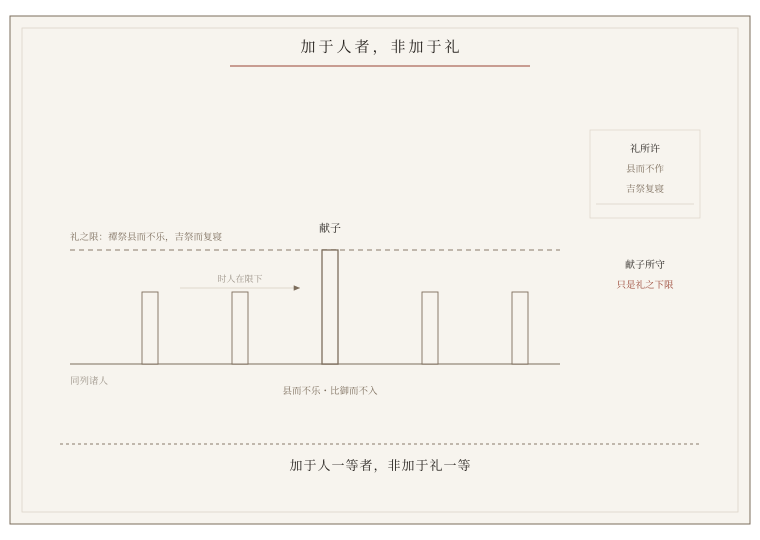

檀弓上 · 三·二十一 · 第 224 课
孟献子既禫，县乐器而不作，可以御妇人而不入寝。夫子曰「献子加于人一等矣」。注「加于人一等，言逾常人也」。
说什么事：礼所许的，他偏少取一分。
落在哪一层：礼，兼及礼意与礼制。论「加于人」非「加于礼」。
为何编在此位：上节论髽之度，此节论除丧之节。度与节，皆在「不过」与「不及」之间取中。
【经】孟獻子禫，縣而不樂，比御而不入。夫子曰：「獻子加於人一等矣！」
【注】孟献子，鲁大夫仲孙蔑。禫，祭名。县而不乐，县乐器而不作。比御而不入，可以御妇人矣，而不入寝。加于人一等，言逾常人也。
【疏】此一节论献子除丧作乐，得礼之宜。依礼，禫祭暂县省乐而不恒作也，至二十八月乃始作乐；又依礼，禫后吉祭乃始复寝。当时人禫祭之后则恒作乐，未至吉祭而复寝。今献子既禫，暂县省乐而不恒作，比可以御妇人而不入寝，虽于礼是常，而特异余人，故夫子善之云「献子加于人一等矣」，不谓加于礼一等。其祥禫之月，先儒不同：王肃以二十五月大祥，其月为禫，二十六月作乐，据「祥而缟，是月禫，徙月乐」，又《间传》「三年之丧，二十五月而毕」，《士虞礼》「中月而禫」，文二年「公子遂如齐纳币」左氏以为礼；郑康成则二十五月大祥、二十七月而禫、二十八月而作乐，据《杂记》「父在为母为妻十三月大祥，十五月禫」，又「中月」当为间隔一月，《丧服小记》「中一以上而祔」、《学记》「中年考校」皆以中为间，戴德《丧服变除礼》「二十五月大祥，二十七月而禫」，故郑依而用焉。郑又以八音之乐工人所奏必待二十八月，「朝祥莫歌」非正乐，是乐之细别，故郑云「笑其为乐速也」。《大记》「禫而内无哭者，乐作矣」，郑谓「方将作乐」，非即作乐；《大记》「禫而从御，吉祭而复寝」与《间传》「大祥居复寝」不冲突：前谓去垩室复殡宫之寝，后谓禫后得御、必待吉祭乃复寝。注「孟献子，鲁大夫仲孙蔑」：襄五年经书「仲孙蔑会吴于善道」，传云「孟献子会吴于善道」；仲称孟者，庆父之后，郑注《论语》云「庆父辀称死，时人为之讳，故云孟氏」。
禫 除服之祭。注「禫，祭名」。
县 悬乐器。注「县乐器而不作」。
比御 注「可以御妇人矣」。比，及、可及。
不入 不入寝。
加于人一等 注「言逾常人也」。逾于常人，非逾于礼。
孟献子行过禫祭，把乐器悬挂起来而不演奏；已可以亲近妇人，却不入寝室。夫子说：「献子比常人高出一等。」
此节只写两件「不为」：乐器悬着不奏，寝门可入不入。夫子一句「加于人一等」，所加的不是礼，是人心。疏一句最要紧：「虽于礼是常，而特异余人」「不谓加于礼一等」——献子所做的，正是礼所许的最低限度；可他比当时人少取了一分，于是显出高低。
第一层 礼许而人过 依礼，禫祭只是「暂县省乐」，至二十八月才作乐；禫后至吉祭才复寝。当时人却禫后即恒作乐、未吉祭即复寝。献子守着礼的最低线，反而成了「加于人一等」。此层可见一条常理：礼之坏，不在有人破礼，而在众人把礼的下限当上限之后又往下挪。
第二层 加于人不加于礼 疏特意点破这一句，是怕人误读为「献子过于礼」。礼不可过，人可高一等。高一等的，是自持之力，不是仪节之数。
第三层 祥禫月数之争 此节疏最繁处，是郑、王两家的月数之争：王肃二十五月大祥、其月即禫、二十六月作乐；郑玄二十五月大祥、二十七月禫、二十八月作乐。争点在「中月而禫」之「中」：王读为月中，郑读为间隔一月。疏举《丧服小记》「中一以上」、《学记》「中年考校」为证，又举《曲礼》「丧事先远日」以驳「大祥在下旬则不容中月而禫」。此层不必定谁是谁非，可看古人如何用一部书内部的用例去解一个字。
第四层 乐之细别 郑以「朝祥莫歌」非正乐，是「乐之细别」，故孔子只说「为乐速」。八音之乐，工人所奏，必待二十八月。此辨把「作乐」分成两层：自己弹唱是一层，正式奏乐又是一层。礼之细，细到这种地方。
与今日何干 凡制度，都有上下限。守下限而众人已在下限之下，此人便显得「高一等」。这时最易发生的误读，是把他的自持当作制度加码。此节提醒：赏其人所守，不必改其制度。
| 左 | 右 |
|---|---|
| 孟献子禫 | 除服之祭 |
| 县而不乐 | 悬乐器而不作，暂省乐 |
| 比御而不入 | 可御妇人而不入寝 |
| 加于人一等 | 逾常人，非逾于礼 |
| 依礼：至二十八月始作乐 | 八音之乐，工人所奏 |
| 依礼：禫后吉祭乃复寝 | 未至吉祭而复寝，时人之过 |
| 郑：二十五月大祥、二十七月禫 | 中月读为间隔一月 |
| 王：二十五月大祥、其月禫 | 中月读为月中 |
画一间大夫之家的堂，视点略俯。堂侧一排编钟与编磬悬在木架上，钟磬齐整，架下无人，尘埃可见。堂后一间内室的门口半掩，门内是寝席，席上被褥折叠整齐，无人入内。庭中立着一位中年大夫（玄端、束带），背手立在钟架之前，面朝乐器而不看内室，脚下未动。庭角一只小几，几上一壶酒未启封。不写文字、不画人面细节。赭色只用在钟架的一根横梁与那壶酒的封泥上。
